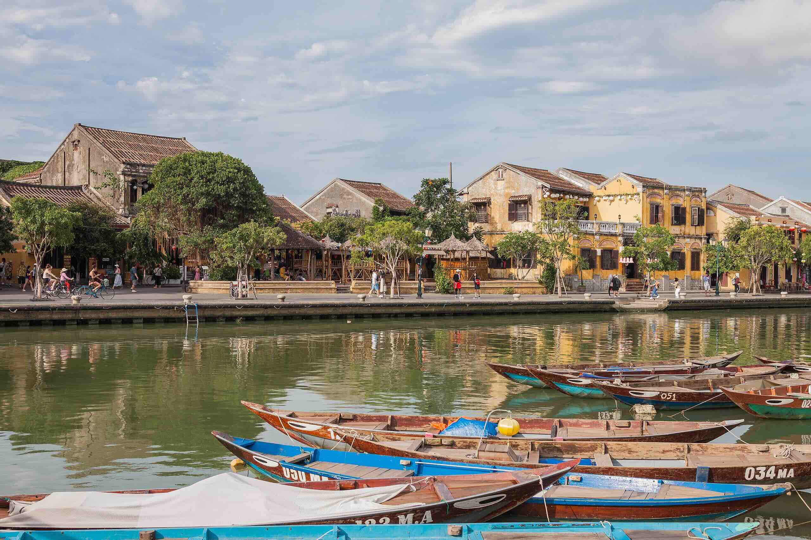

Vietnam Trip Guide
Where to Stay
Hanoi
Three neighborhoods to consider:
- Tay Ho (West Lake): Quieter, popular with expats.
- Hoan Kiem (Old Quarter): Busy and tourist-friendly.
- Ba Dinh: Close to landmarks, less crowded.
Accommodations:
Da Nang
Vietnam's 5th largest city with a major port.
Attractions:
- Marble Mountains
- Golden Bridge
- Lady Buddha
Accommodations:
Itinerary Highlights
- Hanoi (3 Days): Learn motorbiking, visit landmarks.
- Ha Long Bay (1 Day): Bus trip from Hanoi. Unesco World Heritage Site.
- Hanoi (1 Days): Visit cafes. Eat.
- Hoi An/Da Nang (2 Days): Visit beaches and cultural sites. 
- Ho Chi Minh City (5 Days): Explore the city.
Additional Notes
Plan transportation. Bus and domestic flights are common.
Prepare for varying weather: cooler in Hanoi and Da Lat, warmer in Ho Chi Minh City.